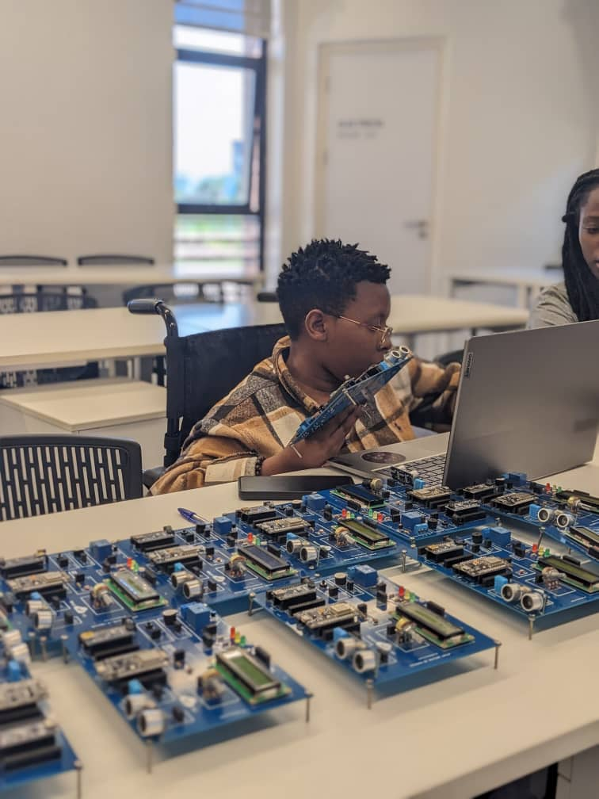

About Me

Hello! I'm Esther, a passionate in software engineering. I love working on creative and technical projects that solve real-world problem
Hello! I'm Esther, a passionate in software engineering. I love working on creative and technical projects that solve real-world problem